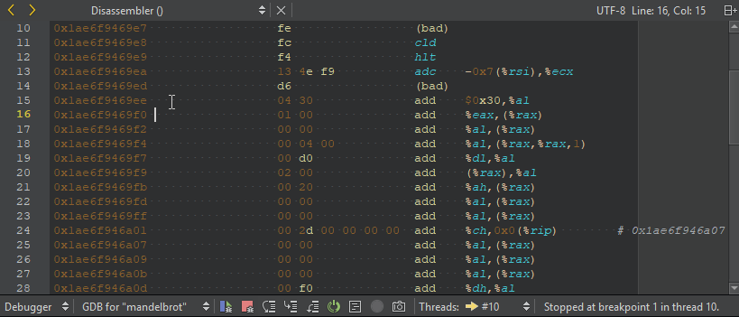
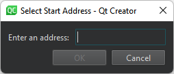

Viewing Disassembled Code
A disassembler translates machine language into assembly language for human-readability.
The Disassembler view displays disassembled code for the current function. It is useful for low-level commands for checking single instructions, such as Step Into and Step Over.

By default, GDB shows AT&T style disassembly. To switch to the Intel style, select Preferences > Debugger > GDB > Use Intel style disassembly.
To open the Disassembler view:
- Select Debug > Operate by Instruction while the debugger is running.
- Select the
 (Operate by Instruction) tool button on the debugger toolbar.
(Operate by Instruction) tool button on the debugger toolbar. - In the Registers view, select a value, and then select Open Disassembler at <value> in the context menu.
Starting Disassembler
To start a disassembler from the Registers view, select Open Disassembler and set the disassembler address:
